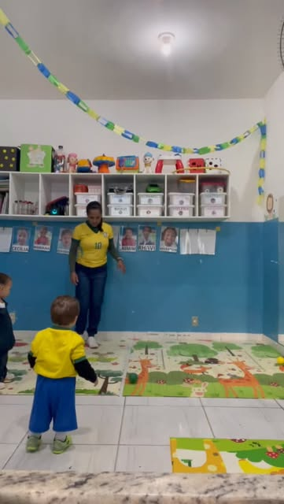

Creche Patati-Patatá
É na Educação Infantil que cada descoberta se torna uma grande diversão com vários aprendizados.
A Creche Patati-Patatá oferece Educação Infantil em horário integral, das 7h30 às 16h30, para crianças do Maternal II ao 2º período (nascidas entre abril de 2019 e março de 2023 — a instituição também aguarda demanda da prefeitura para abrir vagas de 1 ano). São 4 refeições diárias, balanceadas por nutricionista, e atividades lúdicas seguindo a BNCC (Base Nacional Comum Curricular).
- Horário integral: 7h30 às 16h30 (20 minutos de tolerância na entrada e saída);
- 4 refeições ao dia, balanceadas por nutricionista;
- Brinquedoteca, parquinho e biblioteca;
- Atividades lúdicas seguindo a BNCC;
- Funcionamento diário de segunda a sexta — a instituição não entra em greve ou paralisações.
Um pouco da nossa creche
Registros do dia a dia da Creche Patati-Patatá. Clique em qualquer imagem para ampliar.

Quer saber mais sobre este projeto?
Fale com a nossa equipe e tire suas dúvidas sobre vagas, inscrição e documentação.
Ligar (31) 3497-7255 Ver todos os projetos